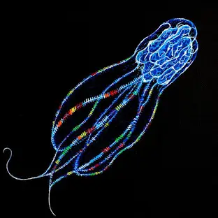

Caracteristica del ambiente abisales
para entender el porque las crituras de las profundidades son asi devemos entender el ambiente que avitan ya que es nesesario explicar como son las condiciones que deben de soportar y el como se adaptan ante esta situacion
Presion
a presión del oceano aumenta aproximadamente una atmósfera cada diez metros,la zona abisal es de aproximadamente 4000m a 6000m por eso los cientificos han descubierto que los organismos abisales han evolucionado para sobrevivir a las más altas presiones de las profundidades oceánicas haciendo que su piel a mayor profundidad, más densa y pegajosa, también se sabe que algunas poseen una estructura esquelética relativamente pequeña en comparación con otras especies, Los tejidos de estos animales están compuestos de grandes cantidades de agua a la misma presión que la del entorno, es por esto que no mueren comprimidos o aplastados.
imagen del pez gota dentro y fuera del oceano
Oscuridad
debido a que en las profundidades del oceano no se prercibe ninguna luz solar es llamada como la zona abisopelagica generando dos problemas la primera es que Muchas de las especies marinas que viven en las grandes profundidades padecen de ceguera parcial o permanente aunqueTambién se sabe que, en otros casos, esta ceguera se presenta cuando un parásito o bacteria se alimenta del tejido ocular de una especie, A pesar de esto, las especies abisales han desarrollado a lo largo del tiempo diversas adaptaciones especiales que les permiten guiarse por los fondos marinos. algunas de ellas son, poseer una negra piel que les permite camuflarce y otra seria la capacidad de producir luz, lo que se conoce como bioluminiscencia, también se sabe que utilizan otros sentidos más adecuados para percibir el entorno como la sensibilidad a campos eléctromagnéticos de otros animales
imagen de un ctenóforo
Temperatura
La temperatura en los abismos oceánicos normalmente se mantiene constante entre los 2 °C y 3 °C pero se sabe que en determinadas zonas existen las fuentes hidrotermales a través de las cuales se expulsa agua geotermalmente caliente que registran temperaturas cercanas a los 400 °C y 420 °C Las áreas de mayor y más rápida variación de temperatura en los océanos son la zona de transición entre las aguas superficiales y las aguas profundas, la termoclina y la transición entre el fondo marino y los caudales de agua caliente en las fuentes hidrotermales

imagen de una fuente hidrotermales junto con un gusado de tubo
Caracteristica de las especies abisales
una ves explicado el como son las sircustancias que deben de vivir esta crituras, explicaremos algunos mecanicos y cambios que desarrollan para sobrevivir las especies abisales
gigantismo
algunas especies sufren gigantismo, aunque no se sabe con exactitud el origen de este proceso,Se cree que esto sucede cuando los recursos son escasos, es decir, cuando hay poco alimento, esto a su vez retardaría su reproducción hasta alcanzar un tamaño considerable, Existe otra hipótesis que apunta a la relación metabolismo-tamaño, ya que los animales de grandes dimensiones presentan una tasa metabólica inferior, es decir, necesitan menos recursos en contraste con los de menor tamaño.
imagen sobre el tamño de los calamares colosal sobre el humano
Aspecto
algunas especies sufren desarrollo de grandes ojos, en estas se percibe la ausencia total o parcial de los conos, además poseen una capa reforzada llamada tapetum lucidum, una especie de tejido que reflecta los rayos luminosos que han entrado en los ojos y sirve para reforzar la visión nocturna, la sensibilidad a los destellos permite que los peces abisales detecten una presa en la más absoluta oscuridad Otros desarrollan dientes grandes, pronunciados y filosos, en algunos casos, estos suelen ser más grandes que su propio cuerpo esto es debido a que deben de asegurarse de casar a su presa ya que la escases de alimento los obliga a ser preciso y seguro en atrapar sus presas.
imagen de uno de las especies mas reconosidas del mundo abisal el pez rapper
alimentacion
debido a la falta de recursos decesario para que las plantas realice la fotosíntesis, los seres deben de consumier los restos de las criaturas muertas que descienden lentamente hacia las profundidades del océano como nieve marina siendo esta una de las fuentes de alimentación para las especies abisales, algunas dependen directamente de ella, aunque otras lo hacen gracias al particulado de detritos ya que algunas especies de bacterias pueden aprovechar la energía química para hacer sus propios alimentos Sin embargo, este proceso es contraproducente ya que también se constituye en una dieta alimenticia para otros animales abisales como los gusanos de tubo. Muchas de estas bacterias, por ejemplo, convierten el sulfuro de hidrógeno en sulfato y almacenan la energía extraída de esta reacción como energía química mediante la síntesis de compuestos a base de carbono.[150